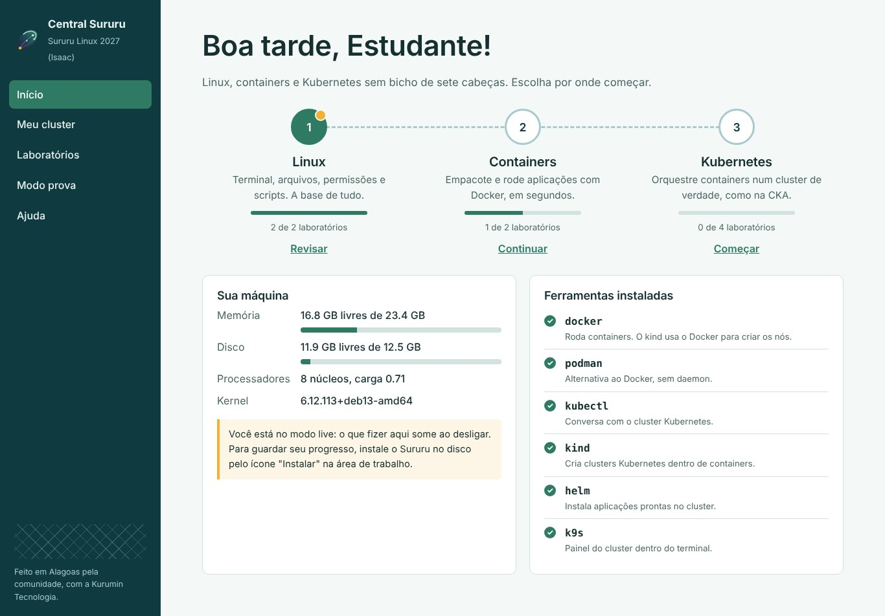

A bodega do Seu Zé
Seu Zé vai abrir uma bodega em Palmeira dos Índios e pediu ajuda para organizar as anotações no computador.
mkdir, chmod, scripts em Bash
Versão 2027 "Isaac", baseada no Debian 13
Uma distribuição brasileira que boota do pendrive com um cluster Kubernetes de verdade e laboratórios em português que se corrigem sozinhos.
Grátis e livre (GPL-3.0). Roda em computador com 4 GB de memória.
Conferir a ISO (SHA256) ·
Notas e outras versões
Com o Rufus, o balenaEtcher ou o Ventoy. Cerca de 1,9 GB.
Funciona com Secure Boot ligado. Em menos de um minuto você está na área de trabalho, em português, com teclado ABNT2.
Abra a Central Sururu e clique em "Criar meu cluster". Pode quebrar à vontade: é só apagar e criar de novo.
kubectl get nodes
NAME STATUS ROLES
sururu-control-plane Ready control-plane
sururu-worker Ready <none>O coração do sistema. Um painel em português, que roda só no seu computador, sem conta e sem internet.

Nada de "foo" e "bar". Cada laboratório começa com um problema de gente de verdade.
Seu Zé vai abrir uma bodega em Palmeira dos Índios e pediu ajuda para organizar as anotações no computador.
mkdir, chmod, scripts em Bash
A pousada quer o site no ar hoje. Você mostra que, com um container, isso leva segundos.
docker run, Dockerfile, imagens
A loja de sururu vende pela internet e não pode cair. Três réplicas, um Service e uma atualização sem derrubar nada.
Deployment, Service, ConfigMap, rollout
O mesmo pendrive para a turma inteira. Roda sem instalar, funciona offline e não pede licença nem conta. Ideal para escolas técnicas, institutos federais, cursos de TI e oficinas.
Quero levar para a minha turmaUm laboratório é um arquivo JSON. Tem modelo e passo a passo na documentação.
Como escreverTestou num computador diferente? Achou um erro? Abra uma issue no GitHub.
Participar da comunidadeUse, teste e indique para quem está começando. Estrela no GitHub também conta.
Dar uma estrelaO Sururu é e vai continuar grátis. Se ele te ajudou a passar numa prova, a conseguir uma vaga ou só a perder o medo do terminal, um café ajuda a manter o projeto vivo. Você escolhe o valor.
Chave Pix: engineer@tacio.cloud
Quem recebe: Tácio Souza de Oliveira, mantenedor do projeto (Itaú). Para onde vai o dinheiro